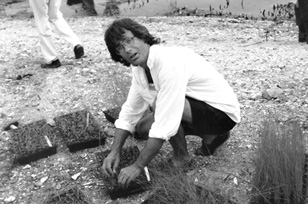
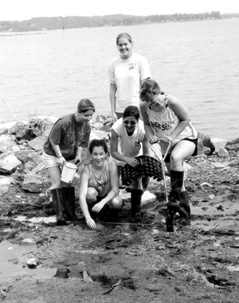
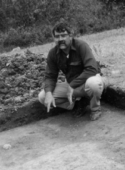

Dock of the Bay
Volume VI Number 21
May 28 - June 3, 1998
In Rose Haven, Patience and Partnerships Yield 'Passive' Park
photos by Bill Lambrecht Pat Piper and students from Southern Senior High School work to restore Bay grasses, below.
Welcome low tides signaling the conclusion of the rainy season brought in focus a bright picture of success along Anne Arundle's southernmost stretch of Chesapeake Bay.
Here, along exposed flats in Rose Haven, more than 40 volunteers with boots or muddy toes gathered at low tide on two mornings last week to set in 4,000 water plants.
The gathering of neighbors plus students from Anne Arundel Community College and Southern High School marked the latest chapter in a successful partnership that has, out of sheer force of will, created a two-acre park where a batch of Bayfront houses would have been planted.
Sloshing volunteers laughed and played as they embedded the roots of spartina, bayberry and panic grasses. But panic had been the reaction in the community five years ago at the prospect of three or more houses subverting one of the finest Bay views around.
The owner of nearby Herrington Harbour South Marina, Steuart Chaney, was entertaining the idea of selling the valuable, north-facing land that looks out on Herring Bay.
But a razor-sharp organizing campaign saved the valuable land and provided a textbook example of partnership.
First, the purposeful folks of Rose Haven persuaded Chaney that there was another way. And Chaney understood the value of operating a green business.
Next, as in any preservation battle, the landowner or developer had to be compensated. That happened when Anne Arundel County agreed to buy the land for $326,000.
Then, you've got to have workers. The County Department of Parks and Recreation has stayed with the project, providing workers to prepare the land and $800 for plants. Stephen Ailstock, who runs Anne Arundel Community College's environmental center, put together the seeding plan. Plants were grown by developmentally disabled at Provident Center in Arnold. Ray Ciupeck of Southern High School provided a batch of volunteers. The Chesapeake Bay Trust contributed $4,000 to the project.
"What makes this project unique is the type of partnerships involved," said Ailstock, as he supervised the crew.
Chaney did not take his money and run. He has been a key adviser, contributing thousands of dollars in assistance by arranging a marine contractor to haul in tons of rip-rap for a breakwater.
It isn't over. A late spring storm may yet wash away the tender grasses, requiring more planting. Over the summer, poison ivy and phragmites must be kept under control. In the fall, once the shoreline is stabilized, Ailstock will direct the planting of indigenous shrubberies along the slopes leading down to the water.
The Concerned Citizens Committee of Rose Haven will sponsor fundraisers along the way to construct paths, benches, bird houses and duck houses, all of which will shape a passive park. On this sensitive land, saved by an uncommon partnership, you won't see barbecue pits and magnets for rip-roaring partiers.
As committee secretary-treasurer Susan Wills put it: "This won't be a party platform. The habitat we want to attract is wildlife."
-BL
Sheriff Rawlings Expected Trouble; He Found It
by James G. Gibb
Sheriff Stephen Rawlings stood before William Brown's door Wednesday. His task: evict William, Susanna and the rest of the Brown household. Rawlings came fully armed, expecting trouble. And he found it. William Brown vacated his stately brick mansion, situated on a high bank overlooking the South River, but only because of the sheriff's "strong hand and armed force."
William Brown lived and worked in London, one of Anne Arundel County's few towns during the 1700s. A carpenter, cabinet maker, ferryman and innkeeper, Brown joined the likes of Alexander and Elizabeth Ferguson (tailors and innkeepers), Dr. Richard Hill (physician, merchant, ship-owner, and amateur botanist), David Macklefresh (merchant and "Lord Mayor" of London) and others in building this lively port town.
Only Brown's house, part of the 23-acre county-owned National Historic Landmark and park in Edgewater, and portions of another colonial dwelling encased within a modernized, privately owned house, survive from this historic settlement. At least above ground. Volunteer archaeologists and the professional staff of The Lost Towns of Anne Arundel Project, joined by hundreds of school children each year, bring to light vestiges of colonial London Town.
County archaeologist Dr. Al Luckenbach conceived of The Lost Towns Project in 1995. He directs the program, drawing financial and moral support from County Executive John Gary, the County Council and several government agencies and private foundations. In 1995, Dr. Luckenbach reported his findings from the "lost town" of Providence, the precursor of Annapolis, in his book Providence, 1649. You can only read about the research at Providence, but you can visit the ongoing excavations at London Town, even join in the nearly daily discoveries.
Most of what we know about the people and places of London, Providence and other lost towns comes from archaeology. No maps of Anne Arundel's early towns survive, and the few documents that mention such events as William Brown's forcible eviction in 1780 are often cryptic. The written record provides few details about London, a port that bustled with sailors and merchants, local planters, slaves, small farmers and a variety of artisans. But these people, and those of the other lost towns, left a rich material record of their lives.
Some evidence of the area's past can be seen in the old houses that dot the landscape. Forests and fields, even the road system, have something to tell about how Maryland's earliest European inhabitants lived and what they thought. Most of the information, however, lies below lawns and houses, and in some cases beneath parking lots, roads and shopping malls. That's where the archaeologist comes in, and that's where the discoveries begin.
Since 1995, The Lost Towns Project has unearthed the remains of at least three buildings and thousands of artifacts at London. Some of the objects and one of the buildings date to the late 1600s, a time when Annapolis was a small hamlet and London still served as the county seat (16841695).
Beginning with my next 'Letter from London,' I will share with NBT readers the latest finds from London, Providence, and several other town sites, as well as some of the insights that Director Al Luckenbach and other project team members bring to our understanding of Colonial Maryland. And yes, I will tell you what became of William Brown and his family.
Jim Gibb, assistant director of The Lost Towns of Anne Arundel Project, writes "Letters from London" -- an exclusive feature of New Bay Times.
Ex-Gov. Harry Hughes, Still a Bay Hero
Twenty years after leaving Maryland's State House, Harry Hughes continues to work for the Bay.
When he was governor 20 years ago, Harry Hughes signed the first Chesapeake Bay Agreement, showing the will and the way to turn the tide.
Later, Hughes began the striped bass moratorium that led to the world-recognized recovery of Chesapeake rockfish. The phosphate detergent ban and the Critical Area Commission came about during his two terms in office.
Long after he left the governor's office, Hughes stayed in the forefront of Bay protection: he is chairman of the Eastern Shore Land Conservancy and, in a role brimming with controversy, he chaired the Blue Ribbon Citizen Pfiesteria Action Commission last year.
Hughes' continuing work for the Chesapeake Bay has won him one of the region's highest honors: the Truitt Environmental Award, named in honor of pioneer Chesapeake Bay scientist Reginald V. Truitt.
"This award pays special tribute to Harry Hughes' exceptional environmental contributions to Maryland," said Donald Boesch, president of the University of Maryland Center for Environmental Science, which sponsors the award.
The honor was presented at a black tie ceremony last week in Annapolis.
Tom Horton, Baltimore Sun columnist and prolific writer on Bay issues, was part of a committee making nominations for the award. Horton, who, like Hughes, grew up in Caroline County, recalled the former governor's "fascinating evolution" in environmental issues.
"He was a guy that grew up along the shore, but the Bay and the outdoors and the environment never were on his radar screen," Horton said.
But politics was at the center of that radar screen, and as governor, Hughes first saw the worries about the declining Chesapeake and then the rewards from taking brave stands.
"He may go down as the best governor the Bay has ever had," Horton said. "I'm almost as impressed by the fact that he continues to keep his hand in it when he doesn't have to anymore."
-NBT
The Way to Go When You Need a Tow
It's happened to everybody, usually with your boss or your prissy sister-in-law on board. Your boat is running great and suddenly, nothing.
"This will just take a second," you say bravely, grabbing your tool box. You drop anchor just in case it takes a little longer.
Next thing you know, an hour has gone by. Your boss is looking at his watch and your sister-in-law (or brother-in-law) is asking questions in a whiny voice.
Who you gonna call?
-NBT
Dear Reader: Will You Write Our Father's Day Feature?
With Father's Day just around the corner on June 21, NBT needs your help. We've gotten the kind of challenge you usually hear on public radio and television, where a corporate sponsor holds out a big carrot to urge on listeners or viewers. Alexander's of Annapolis Salon & Day Spa is our corporate sponsor, and you're the partner we're seeking.
The Challenge: Wring our hearts with a story of how your dad set the standard for fathers. Send charming pictures, too.
The Prize: Seeing your story in print.
There's a Grand Prize, too: Your dad - or you - enjoys free a "Gentleman's Choice" package at Alexander's Salon & Day Spa.
Here's how to do it. Tell your story in your own words, anywhere from 200 to 500 and more if you need them.
It's a good idea to start with a memory. From there, show us how your dad marked the path of your life in footsteps you could follow. Use words, actions and interactions to make us feel the way you do. Send pictures, too, so we can see just what you mean.
Show us the time and place, and if that's Chesapeake Country, all the better.
Ideally, you'll send a print and electronic copy, but if you have to handwrite or use a typewriter, do so.
Usually, a good story gets even better if you re-read and polish it once or twice, and correct your spelling. But sometimes - often it's when you're telling a truth so familiar that you know it like the back of your hand - you get lucky, and all the words are just right.
How many will we print? That depends on how many we get and how well you tell your story. We'd like to print every one of them, and we'll try to do just that.
Who gets the grand prize? We expect all your stories to be so good that we're going to make our corporate challenge-giver Alexander himself, be the judge.
The Grand Prize Winner will be announced in our June 18 issue, when all the stories will appear.
Deadline: 5pm Wednesday, June 10 (by hand, mail or fax, email or computer disk).
Photos should be originals or high-resolution copies. They may be black and white, color, negatives, slides or electronic, but not photocopies. All photos will be returned.
-SOM
In Virginia, little was spent on Chesapeake Bay under former Gov. George Allen. Now we learn that the state police have begun a criminal investigation into the Department of Environmental Quality's awarding of $200,000 to an Allen crony who maintained his political war-chest ...
New Yorkers may be seeing some future shock of their own: garbage police. In Brooklyn the "Sanpatrol" has been picking through home garbage in search of items that should be recycled rather than hauled to clogged landfills, the New York Times reports. If you have more than five recyclables in your can, you can be fined ...
In the Idaho Panhandle, conservationists have saved another tract of sensitive land from developers. The Nature Conservancy announced this month the purchase of 88 acres of wetlands for $245,000 from a Portland timber company. The land, along Cougar Bay near Lake Coeur d'Alene, will be preserved as wildlife habitat ...
Hollywood actor Ed Begley Jr. used to be known for the dumb and excessive way he lived. But when it comes to automobiles, Begley seems fairly smart. With his solar-charged electric car and a Ford Contour sedan that runs on compressed natural gas, Begley boasts that he hasn't been to a filling station in eight years. But he admitted that a recent 1,300-mile trip to Portland was a challenge, since his Ford can only go 225 miles before he needsto dump in natural gas ...
Our Creature Feature this week comes to us from Florida, where motorists are getting an eyeful after recent rains. Along I-75 and US 441, dozens of alligators, apparently fed up with swimming in swamps, have crawled up on the roads, according to the Atlanta Constitution.
Floridians see plenty of alligators, but this roadside attraction is drawing curious crowds and picture-snappers, enough that police have sprung into action: Motorists have begun getting $60 fines for "gator-gawking."
| Back to Archives |
Volume VI Number 21
May 28 - June 3, 1998
New Bay Times
| Homepage |